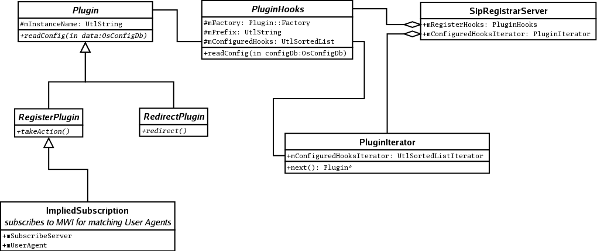

The following UML shows the relationships between the classes used to implement a plugin interface.
To define a plugin interface, a component creates a class derived from Plugin. This defines the interface(s) specific to the plugin; for example, in RegisterPlugin it defines a takeAction interface that allows each plugin to take some action when a REGISTER request is accepted.
The PluginHooks class is instantiated and its readConfig interface called by a the component to actually read what plugins have been configured for each class it defines that is derived from Plugin.
To actually invoke each configured plugin, the component instantiates a PluginIterator object on the PluginHooks object it configured, and then invokes the action interface using each Plugin object that it returns.